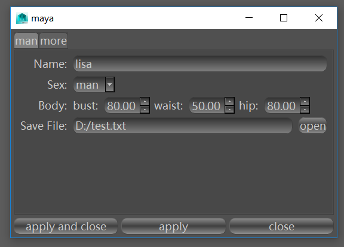

父类：
属性：
方法：
信号：
文档
__init__(self)
创建与maya工具窗口相似的窗口。
点击apply and close按钮依次执行apply,close方法。
点击apply按钮执行apply方法。
点击close按钮执行close方法。
效果如下：

AttributeDict options
由函数名称和函数组件构成的键值对。
showNormal(self)
显示窗口。
close(self)
关闭窗口。
apply(self)
以当前选择的函数组件所表示的参数运行想要函数。
add(self, function fn)
参数 fn: python函数。
添加相应的函数组件。
dict dumps(self)
将所有函数组件为可写入yaml的通用数据。
返回: 由函数数名和函数组件dump生产的通用数据构成的键值对{str arg: dict option……}
loads(self, dict data)
参数 data: 由函数数名和函数组件dump生产的通用数据构成的键值对{str arg: dict option……}
将通用数据转化为窗口的Option。
void applySignal()
执行apply函数时时发射。
void closeSignal()
执行close函数时时发射。
void showSignal()
执行showSignal函数时时发射。
案例
from QFn import window, fn, args
win = window.Window()
win.showNormal()
win.add(fn.man)
win.options.man(
name=args.String(),
sex=args.Enum("man", "woman"),
body=args.FloatArray(["bust", "waist", "hip"]),
save_file=args.Path("txt"),
error_arg=args.Path("txt")
)
win.add(fn.more)
win.options.more(
path_array=args.PathArray(),
int=args.Int(),
int_array=args.IntArray(["IntA", "IntB", "IntC"]),
bool=args.Bool(),
bool_array=args.BoolArray("BoolA", "BoolB", "BoolC"),
)
new_window = window.Window()
new_window.showNormal()
new_window.loads(win.dumps())